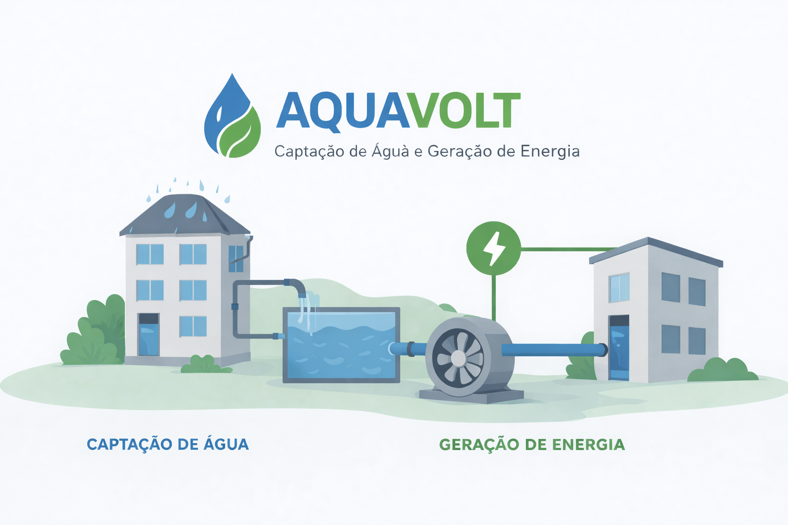

Problema: Alto consumo de água e energia em ambientes urbanos.
Solução: Desenvolvimento de um sistema de captação de água da chuva, filtragem, reuso e geração de energia por microturbinas.
Tecnologias: HTML, CSS, Arduino, sensores.
Meu papel: Participação no desenvolvimento do projeto, organização da proposta, apoio na documentação e apresentação da solução.
Resultado: Projeto acadêmico com foco em sustentabilidade, eficiência energética e reaproveitamento hídrico em edifícios.